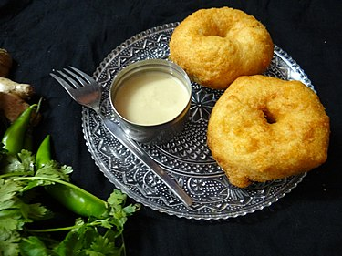

Home
Vada
Description
Vada is a category of savoury fried snacks native to India. Vadas can be described as fritters, cutlets, or dumplings.
It's also know as vadai, vade, and bada.
Vadas are sometimes stuffed with vegetables and traditionally served with chutneys and sambar.

Ingredients
- Urad dal
- Ginger – 1 inch piece ( chopped )
- Fresh coconut – 1 inch piece ( cut into thin slices )
- Green chili – 1 ( chopped )
- Salt to taste
- Oil for frying
Steps
- Wash and soak urd dal in water for 1-2 hours.
- Drain the water and grind the dal till smooth.
- Add green chili, coconut, ginger and salt.
- Heat oil in a frying pan.
- Apply little water in your palm and keep a lemon size dough in it.
- Gently make a hole in the center.
- Drop the vada in the oil and deep fry till golden brown from both the sides.
- Serve hot with sambhar.